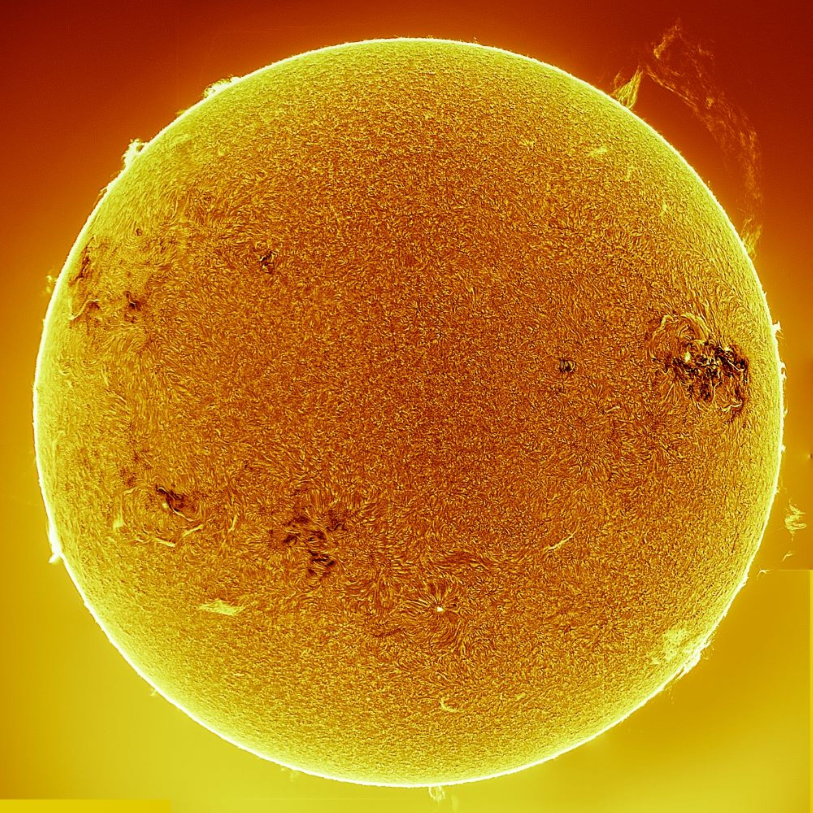

Getting Started with Astrophotography
Astrophotography is an exciting way to connect with the night sky. Whether you have a smartphone, DSLR, or telescope, you can start capturing celestial wonders like the moon, planets, and even meteors!
What Equipment Do You Need?
Smartphone
With just a smartphone, you can capture the moon, star trails, and even some planets. Apps like NightCap help improve long-exposure photography.
DSLR or Mirrorless Camera
A DSLR or mirrorless camera with manual controls allows you to capture sharp, detailed images of the moon, planets, and stars. A sturdy tripod and remote shutter are essential.
Telescope
A telescope is perfect for zooming in on planets, craters of the moon, and even distant galaxies. Attach your DSLR or use a dedicated astro-camera for long exposures.
No Equipment? Use Remote Telescopes or Space Data
If you don’t have access to a telescope, you can still engage in astrophotography using remote telescopes from networks like iTelescope or Telescope Live. Additionally, you can process real data from telescopes like the Hubble Space Telescope (HST) or the James Webb Space Telescope (JWST) to create stunning astrophotography!
Photographing Near-Earth Objects (NEOs)
Near-Earth objects, such as asteroids and comets, are fascinating celestial bodies. Using a telescope and long-exposure techniques, you can capture these fast-moving objects as they pass close to Earth.
- Use a wide-field telescope to track the movement of NEOs.
- Take long-exposure images to capture their path across the night sky.
- Check websites like NASA's CNEOS to track upcoming NEO passes.
How to Capture Celestial Objects
Here's a brief guide on how to photograph various celestial objects:
The Sun
Never photograph the Sun without a proper solar filter! You can capture sunspots, eclipses, and even solar flares.
The Moon
For stunning moon photos, use a camera with a telephoto lens or telescope. Focus on capturing details of craters and the moon's phases.
Mars & Jupiter
Mars and Jupiter can be photographed using a telescope and a planetary camera or DSLR. Capture Mars' reddish hue and Jupiter's bands and moons.
Saturn
Saturn's rings make it a favorite target. Use a telescope and capture this beauty by stacking multiple images for clarity.
Meteor Showers
Use a wide-angle lens, a tripod, and long exposures to capture multiple meteors during peak showers. Timing is key!
Comets
Comets are spectacular. Track their location using star charts or apps and photograph their glowing tails with long exposures.
Getting Involved in Astrophotography
Astrophotography is a great hobby to share with others. You can join online communities, follow space news, or even participate in local star parties. Some platforms to help you get started:
- Join forums like Cloudy Nights for tips and guidance from experienced astrophotographers.
- Use apps like Stellarium to find the best time to shoot celestial events.
- Attend virtual or in-person astrophotography workshops to learn advanced techniques.